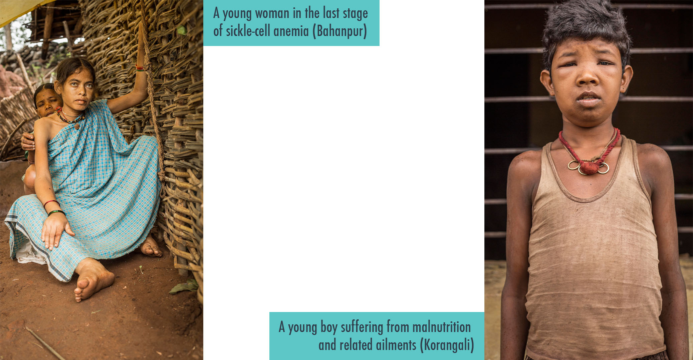
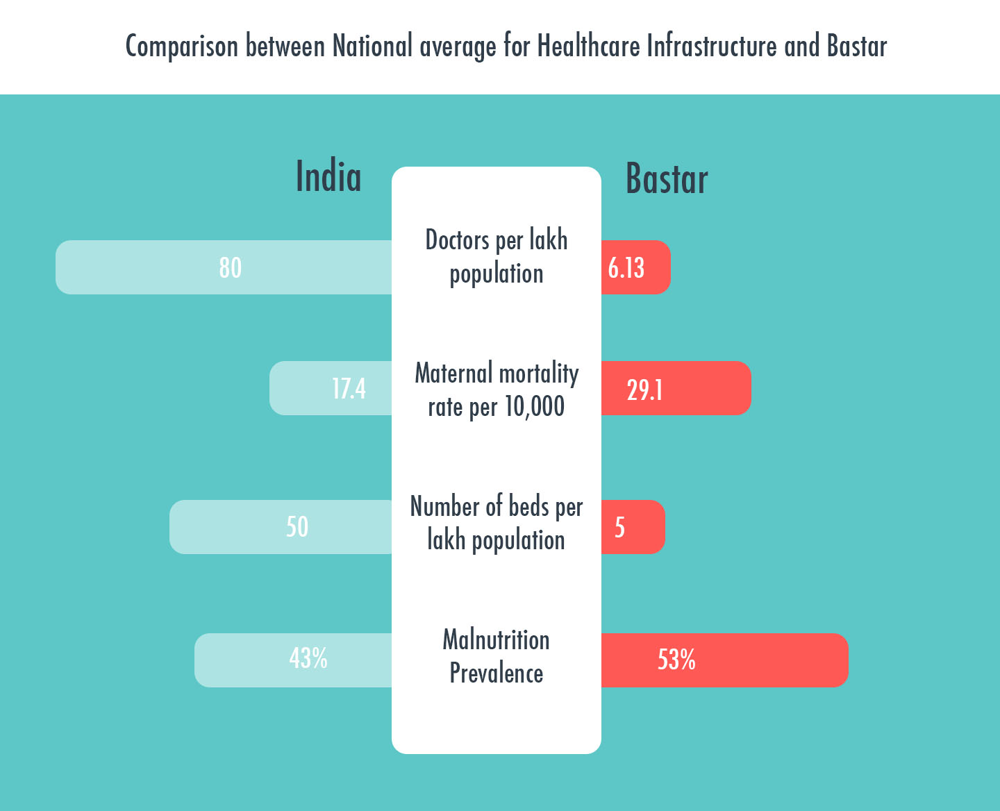
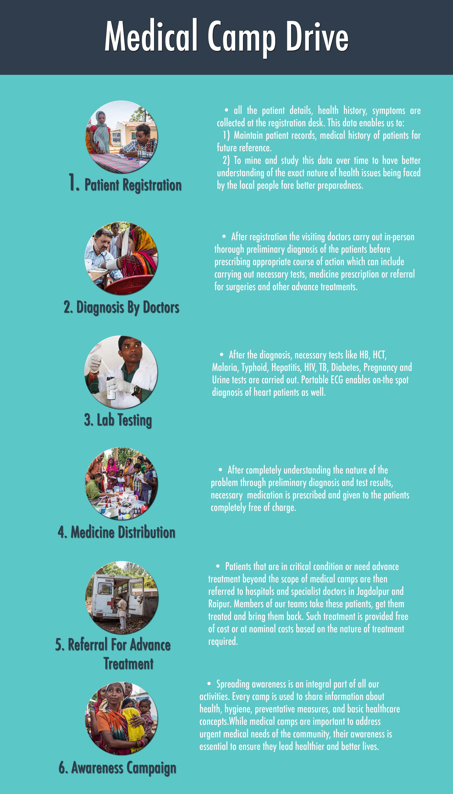
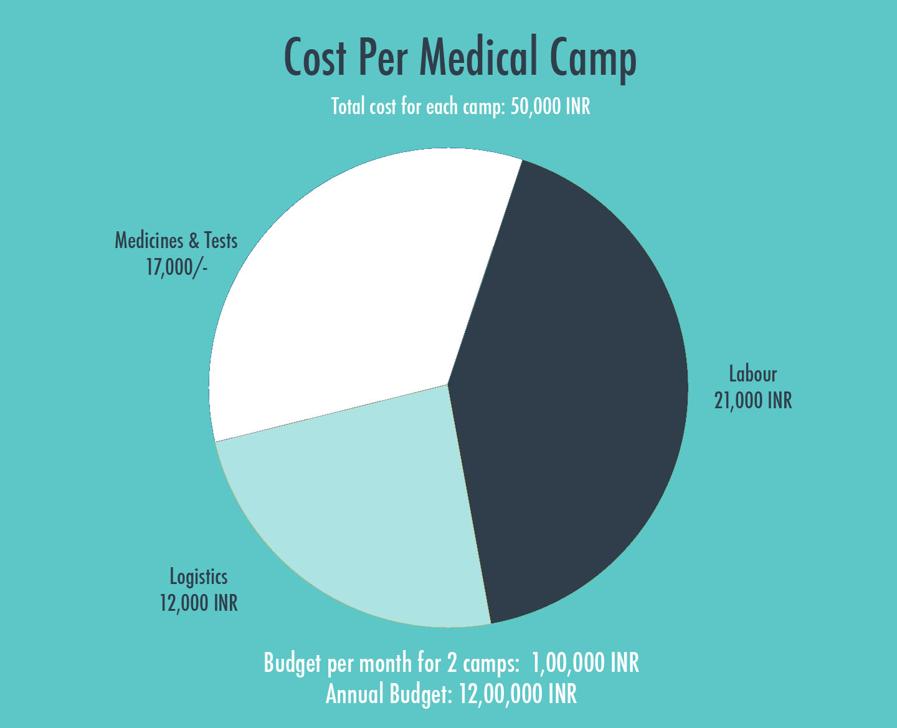
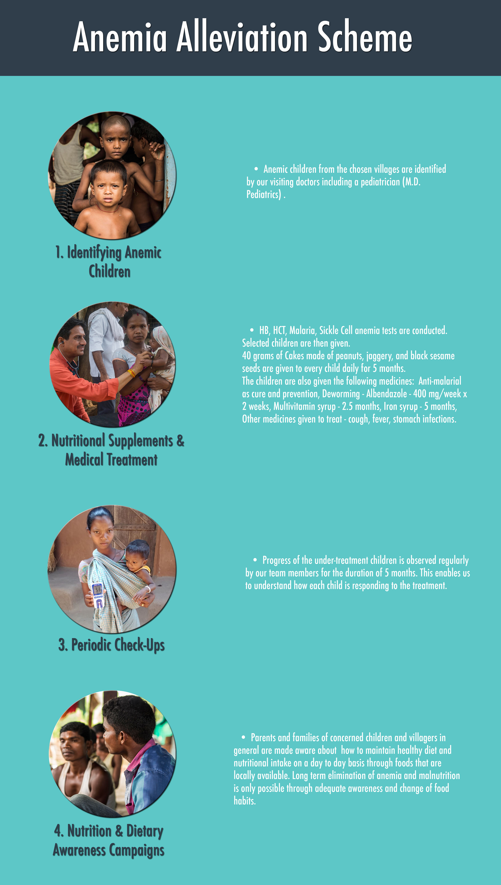
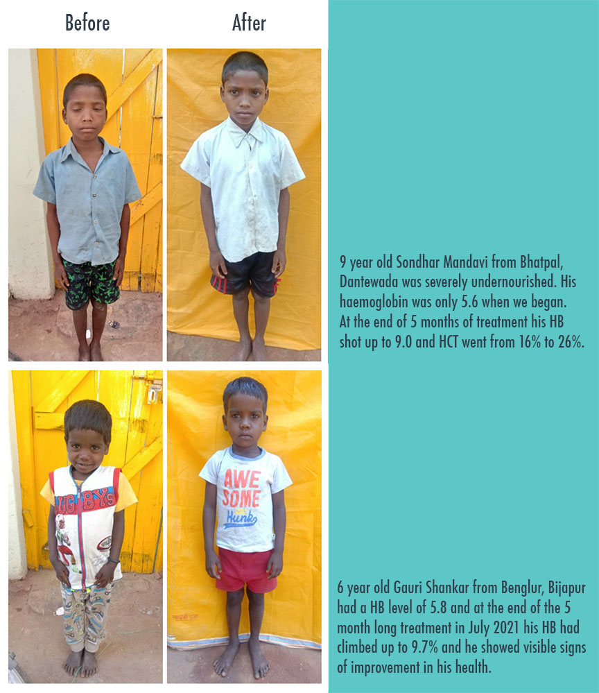
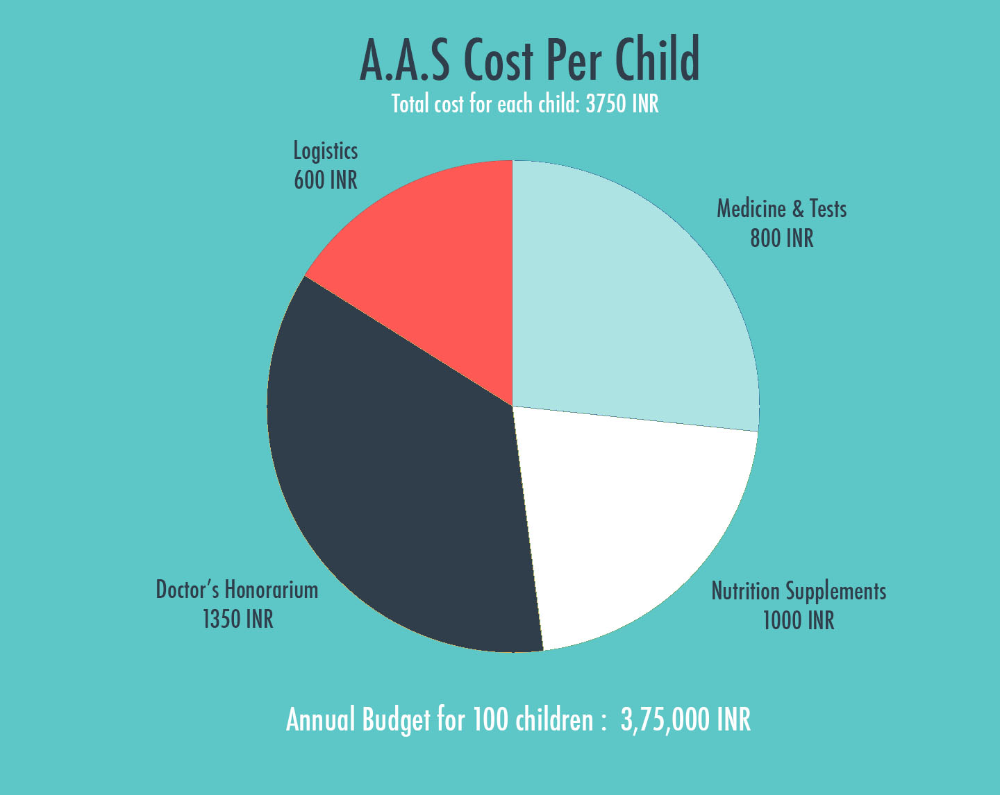
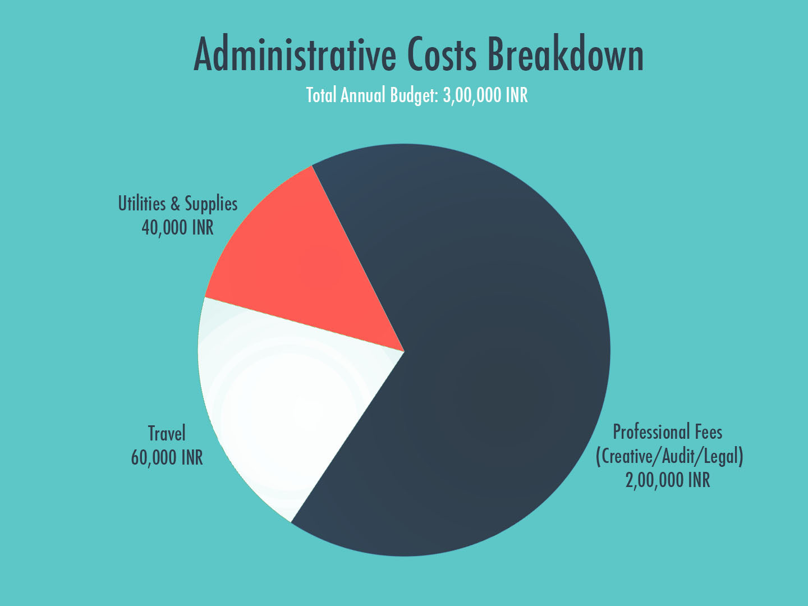
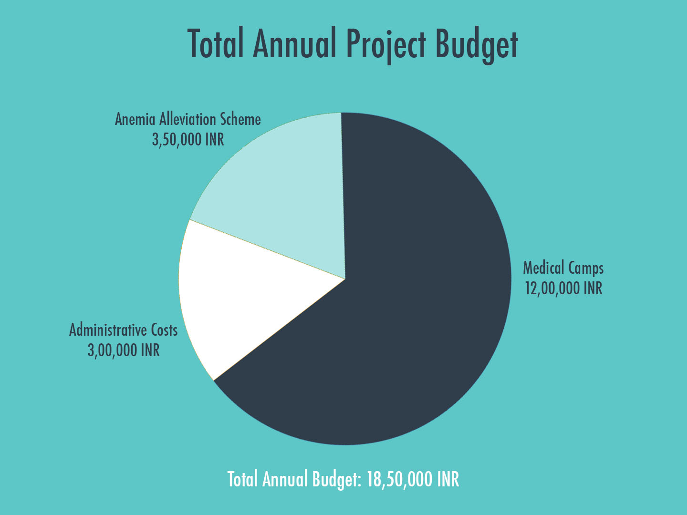

Bastar Rural Healthcare Project
Over 70% of Bastar consists of tribal population living in remote and poorly connected villages scattered across the vast jungles of the region.
Because of difficult terrain and poor connectivity large sections of the local community do not have access to proper healthcare. To add to their woes since the Government, media and public attention is constantly on the armed conflict between maoists and the Indian Government, such important issues often fail to get their due attention. As a result many people are still unfamiliar with and apprehensive about modern healthcare, medicine, hospitals and doctors.
A large section of the community still depends primarily on the traditional healers for medical aid. While some ailments and diseases can be cured through traditional knowledge and herbal treatment, many situations require modern medical intervention. Absence of which results in deaths owing to preventable diseases like anemia, malaria, typhoid, jaundice, tuberculosis. Malnutrition and occurrences of sickle-cell anaemia are especially pervasive amongst the tribals of Bastar.

This comparative look at some of the health-related parameters of Bastar in contrast with the national average enables us to understand the grim reality of the healthcare situation in the region..

While a community also needs other things like education and employment, healthcare remains the top most priority because first and foremost people need to be strong and healthy to live life to the fullest and make best use of educational, and employment opportunities. Hence, to address the critical healthcare gap in the region, Rest Of My Family’s rural healthcare project has been active since July, 2017.
Through this collaboration we have been providing financial and administrative support to the project in order to ensure that we have all the necessary diagnostic equipment, medicines and man power for effective implementation.
There are two key components of our project.
1. Medical Camp Drive (M.C.D)
Since July 2017, 2 medical camps have been conducted every month in different villages of Bastar region. Through these camps we have been able to diagnose and treat over 5,000 patients who have little or no access to public or private healthcare. Every camp consists of 6 key steps as shown below:

View the list of complete 78 medical camps conducted so far
View details of all referred cases.
In order to conduct 2 medical camps every month at the cost of 50,000 INR per camp, the total annual budget is 12,00,000 INR per year.
The breakdown of the costs is as shown below:

2. Anemia Alleviation Scheme (A.A.S)
There is rampant malnutrition and anemia among the local communities. Most elders and children complain of issues that are directly or indirectly a result of severe, prolonged malnutrition. With age, prolonged malnutrition leads to compromised immune system and can lead to many health issues and diseases that can be hard to cure and can sometimes be fatal. Hence, it became very clear that Malnutrition and anemia need to be detected and cured in children at a relatively young age.
With this in mind A.A.S was started in 2021 with the goal of providing nutritional and medical support to anemic children. Under this scheme 2 batches consisting of 50 children each will be treated and given nutritional supplements for a period of 5 months every year. Key steps of A.A.S are as follows.

The first batch consisted of of 31 children from Korkoti, Bhatpal and Benglur villages and has been completed successfully. Below are the cases of 2 children that were part of the first batch.
 View the complete data for the children from the first batch here.
The second batch with 50 children is all set to begin in October 2021.
The cost per child is 3,750 INR and thus each batch of 50 students needs a budget amount of 1,87,500 INR. Hence the annual budget for 2 batches is 3,75,000 INR. Breakdown of individual cost is as shown below.

The combined annual budget for M.C.D and A.A.S is 15,50,000.
Apart from these costs an additional 3,00,000 INR is needed to take care of various administrative expenses involved with execution of the projects.
Hence, the total annual budget for the Rural healthcare project: Bastar is 18,50,000 INR.
AIM : Improve the overall health situation among the tribal communities of Bastar, Chattisgarh through
1. Medical Camp Drive: Conducting 2 medical camps in remote and poorly connected villages of the region to diagnose and treat vulnerable and neglected patients.
2. Anemia Alleviation Scheme : To provide nutritional supplements and medical attention to affected children to eliminate malnutrition, anemia at an early age and prevent related illnesses that develop over time.